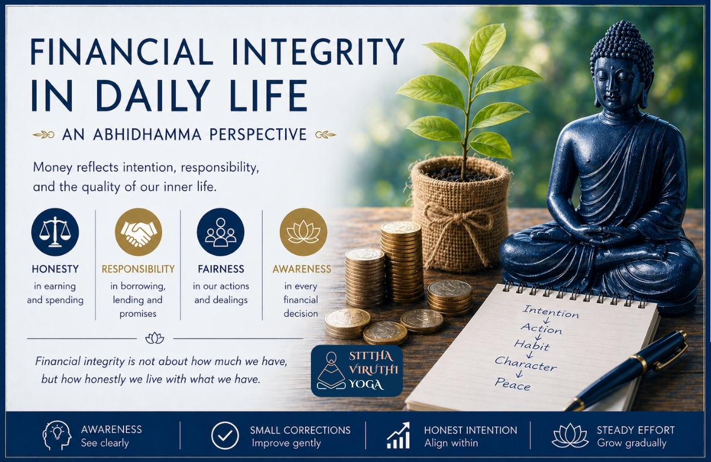

Financial Integrity in Daily Life

Money touches almost every part of our lives—how we earn, spend, borrow, lend, and give. Yet rarely do we pause to ask: “What is happening to my mind through all these financial actions?” In the deeper teaching of Gautama Buddha, especially when seen through the Abhidhamma:
oney reflects intention, responsibility, and the quality of our inner lifeThis article is not about judgment. It is about understanding and gentle transformation.
1. What is Financial Integrity?
Financial integrity means:
- Honesty
- Fairness
- Responsibility
- Awareness
More deeply: How we handle money reflects how our mind functions Not just in big decisions—but in small, everyday moments:
- A justification we make
- A delay we ignore
- A responsibility we avoid
These quietly shape our inner world.
2. Common Patterns in Daily Financial Life
If we observe carefully, certain patterns appear:
- Just a little more
- Everyone does it
- I’ll deal with it later
These are not faults. They are patterns to be seen with clarity
3. Borrowing, Debt & Responsibility
Borrowing money is more than a transaction. It is built on trust
The Weight of a PromiseA person agrees to sign as a guarantor for a friend’s housing loan—an act of goodwill. For some time, everything goes smoothly. Later, the borrower is unable—or unwilling—to repay. The responsibility slowly shifts. Now the guarantor carries:
- Monthly Payments
- Financial Strain
- Family Pressure
A simple act of support becomes a long-term burden
A Gentle Reflection- When we take responsibility, do we fully understand it?
- When others trust us, how do we honour that trust?
- Sometimes, inability is genuine
- Sometimes, responsibility is avoided
Struggle is not failure Avoidance is where awareness begins
A Way Forward- Acknowledge honestly
- Communicate openly
- Make gradual effort
Even small steps restore inner steadiness.
4. Earning, Pricing & Fairness
Financial integrity appears in everyday decisions.
The Silent Burden in BusinessAn exporter gives work to small industries with a promise of payment after a fixed period. When one buyer delays payment, he delays paying those small units—even while receiving money from other orders. On paper, this may seem reasonable. But in reality:
- Workers still need wages
- Materials still need to be bought
- Families depend on that income
Days pass… weeks pass… A delay in one place becomes distress in many lives
A Gentle Question“Is this only a financial decision—or a human one?”
5. Inherited Wealth & Responsibility
Inherited wealth can be accepted with gratitude. At the same time: “This came to me—it was not created by me” This understanding opens a possibility:
A Natural Expression of Gratitude- Helping others
- Supporting meaningful causes
- Practicing generosity
Not as a duty—but as a natural response.
6. The Inner Cost of Financial Dishonesty (A Deeper Look)
When financial actions are not aligned with integrity, the effects may be subtle.
- A slight uneasiness
- Quiet discomfort
- Something unsettled within
Even if everything appears fine externally: the mind does not feel fully at ease
A Quiet Inner StruggleA phone call comes—from someone who trusted us. There is a moment of hesitation: “Should I answer… or avoid it?” Sometimes we delay. Sometimes we respond—but not fully truthfully. Gradually:
- Conversations are avoided
- Meetings feel uncomfortable
- Even a phone call brings tension
What was once natural becomes something we withdraw from
The Subtle Chain WithinAs this continues:
- Avoidance becomes easier
- Honesty becomes harder
- The mind carries a quiet burden
This affects us internally:
- Confidence softens
- Self-respect weakens
- Inner ease fades
Sometimes, under pressure, the mind looks for shortcuts. Not out of bad intention—but from feeling trapped.
The Natural Flow of Cause and EffectEvery action has consequences—not as punishment, but as a natural process.
- Repeated actions → Patterns
- Patterns → Habits
- Habits → Inner character
The mind becomes what it repeatedly practices
A Gentle TruthThis is not something to fear. Because the same process also works positively:
- Honesty brings lightness
- Responsibility builds strength
- Integrity restores peace
- A small step toward truth
- An honest conversation
- A sincere effort
Nothing is permanently lost when awareness begins
7. A Gradual Path Forward
- Awareness
- Small corrections
- Honest intention
- Steady effort
- Change is a quiet journey